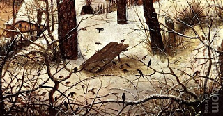

Zevachim 69 - The Impurity of Swallowing
The two-step derivation of the "impurity of the throat" - that is, the impurity that a dead bird can transmit by swallowing its flesh - is as follows. The Torah said, " And any person who will eat an animal that died by itself or was torn... - he shall immerse his garments and immerse himself in the water and remain impure until evening and then be pure ."
Furthermore, the Oral Law tells us that this verse is talking only about birds, and not about any animals. As an exception, we have previously learned that if a bird has a melikah applied to it, even in the wrong way - it may not have the law of a bird who died by itself .
What if the Kohen did a melikah to the bird and then it was found to be a "trefah," - possessing a defect that would surely cause its death anyway? Rabbi Meir says that it does not contaminate, and Rabbi Yehudah says that it does.
Rabbi Meir proves his points of view by comparing with the slaughter of an animal - whose impurity is more strict, and nevertheless the slaughter purifies it - and the same should be true for birds.
Art: Pieter the Elder Bruegel - Winter Landscape with Skaters and a Bird Trap (detail)